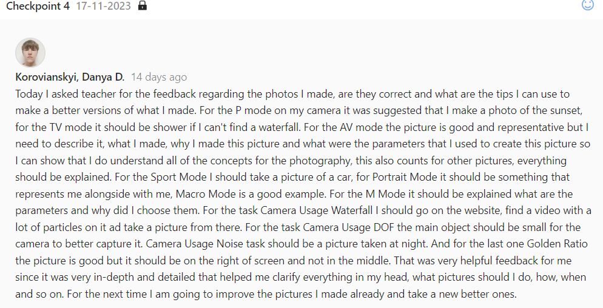
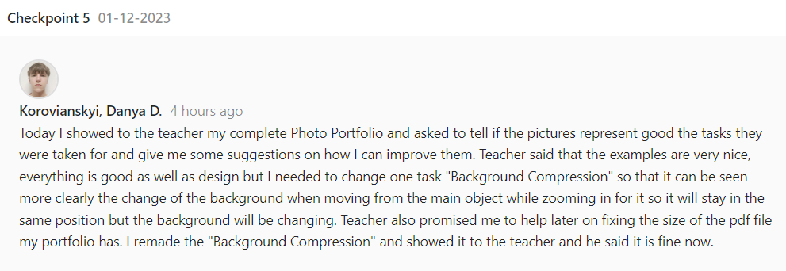
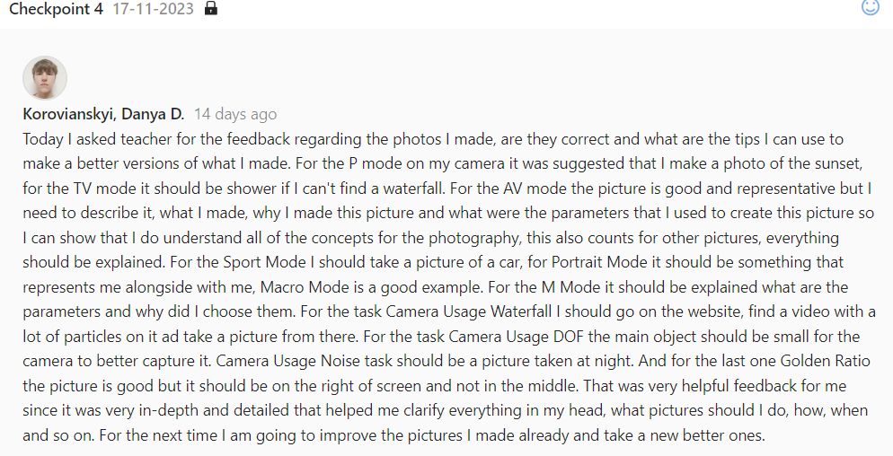
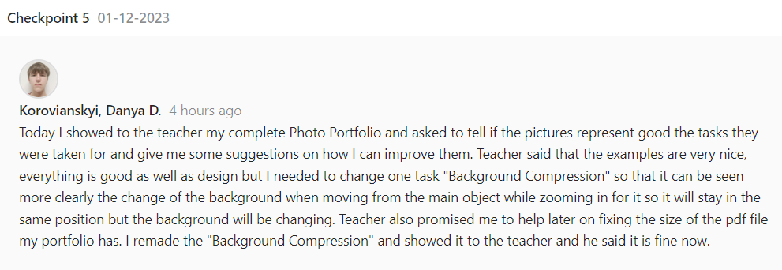

Professional Skills
 



Feedback
While studying in Media students need a way to be able to improve, and to improve they need to have feedback sessions with the teachers to see how they are doing at the study and
subject itself, maybe there are some ways that they might not think of how they can improve the code they have or some other exercises. As a student I have two feedback sections, one
is for personal feedback and the other one is for the group feedback. Currently, I have 5 official boxes with the feedback in it, but, in number two there are actually two feedbacks because
I forgot to ask the teacher for feedpulse checkpoint last time, so, I technically have 6 personal feedpulse checkpoints about things like Portfolio, Digital Prototype Designing and so on.
For the group feedpulse checkpoints we only have 4 where the teacher told us about what should we do or change inside of our Project.
This activity relates to the Communication Learning Outcome
because it improves the productivity of mine and my group mates.
Proof Link:Canvas,